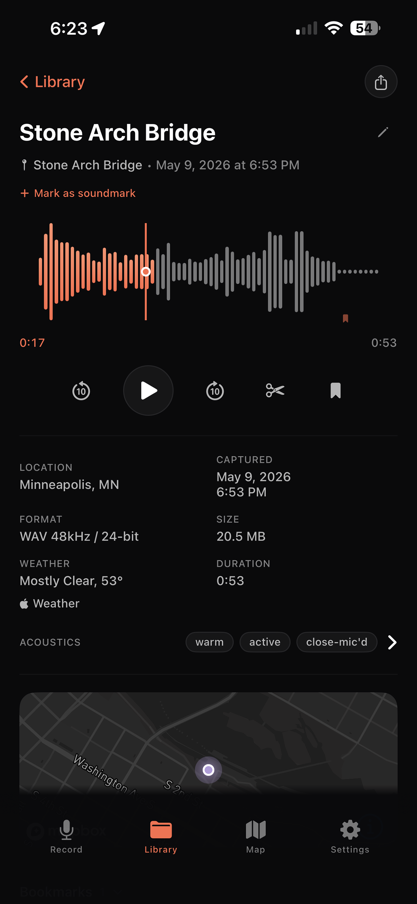
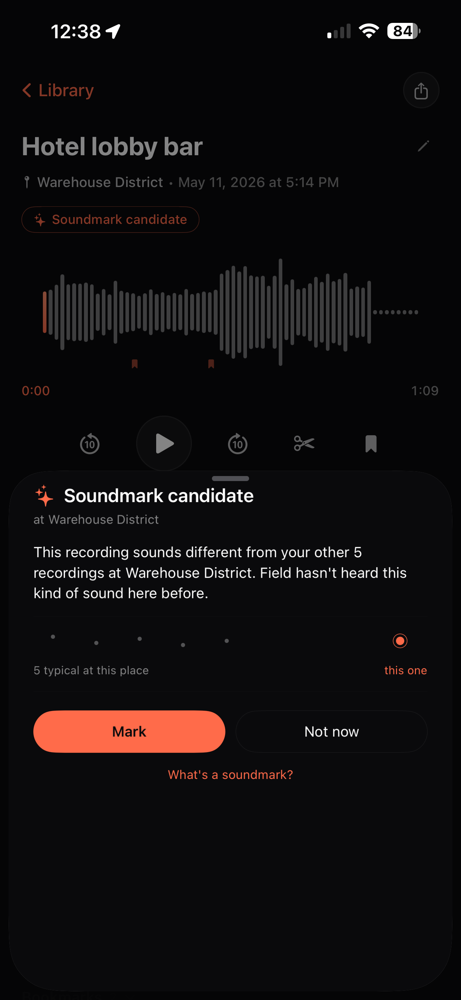

Recently shipped
Mark and find the recordings that capture what makes a place itself.

Field listens to where you've been. When a recording sounds different from the others you've made in a place, it lets you know — and you decide whether to mark it.
The word comes from R. Murray Schafer's acoustic ecology, a framework for hearing places by what makes them sound like themselves.
Features
Record in WAV, AIFF, FLAC, or AAC at up to 96 kHz / 32-bit. CD, Broadcast, and Studio quality tiers — you choose the resolution.
Field measures every recording: loudness, true peak, dynamic range, spectral character, spaciousness, activity. Read it as a phrase ("warm and expansive," "steady and intimate"), or as numbers in any DAW that reads BWF metadata.
On-device AI listens as you record and tags sounds in real time: birdsong, wind, rain, traffic, voices. Tags refine after each recording.
On-device speech recognition runs as you record. Your spoken observations are transcribed live and saved alongside the audio.
Field marks the strongest detections while you record. Find the events in long captures without scrubbing through them.
Pull up any recording and Field finds the others that sound like it. The same kind of acoustic moment from across your library.
Every recording is pinned to a place. Location, place name, and region are captured automatically and shown on a map.
Temperature and conditions are captured at the moment of recording. Dawn, midday, golden hour, dusk, or night — the time of day is noted alongside.
Six themes — Dark, Light, Dawn, Golden Hour, Night, Outdoors. Each is tuned for the light and mood you're recording in.
Field. Pro
A one-time upgrade. No subscription.
Organize recordings by project, trip, or session.
Your library syncs across your devices through your own iCloud account. Audio downloads on demand when you open a recording; metadata syncs immediately.
Rules-based collections that update themselves. Filter by tag, place, soundmark status, duration, or any combination.
Tune how confident Field needs to be before adding each individual tag.
Set in and out points, preview the edit, save as new or replace.
Drop timestamped markers during playback. Add labels, tap to jump. Exported as DAW markers.
Export recordings as Reaper sessions with tag-derived markers in place.
Share recordings as waveform videos in 16:9, 1:1, or 9:16 with optional title and location overlay.
Privacy
Sound identification, transcription, and analysis run entirely on your device. Field has no servers and never sees your recordings. Everything stays on your device unless you turn on iCloud Sync, and even then, your sync runs through your own iCloud account, not ours.
Support
Bug reports, feature requests, and ways to make this even better.